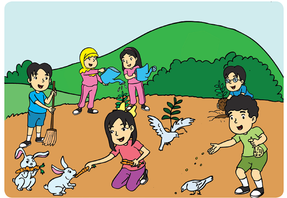

Ayo Amati
Pada hari Minggu Beni, Siti, Edo, Lani, dan Udin diajak oleh Dayu berkunjung ke rumah pamannya. Di sana mereka melakukan kegiatan di alam terbuka. Amati gambar dan perhatikan hubungan antara Dayu dan teman-temannya dengan hewan dan tumbuhan.

Apa yang dapat kamu simpulkan dari gambar di halaman sebelumnya?
Mengapa antara manusia, hewan, dan tumbuhan saling membutuhkan?